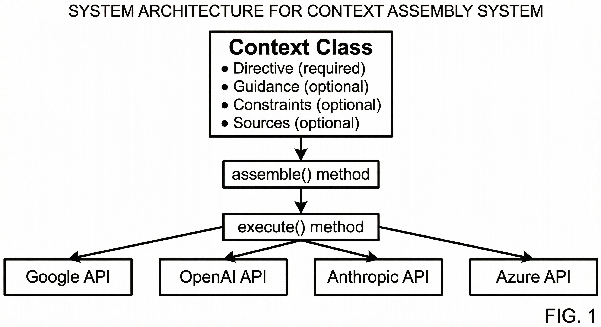
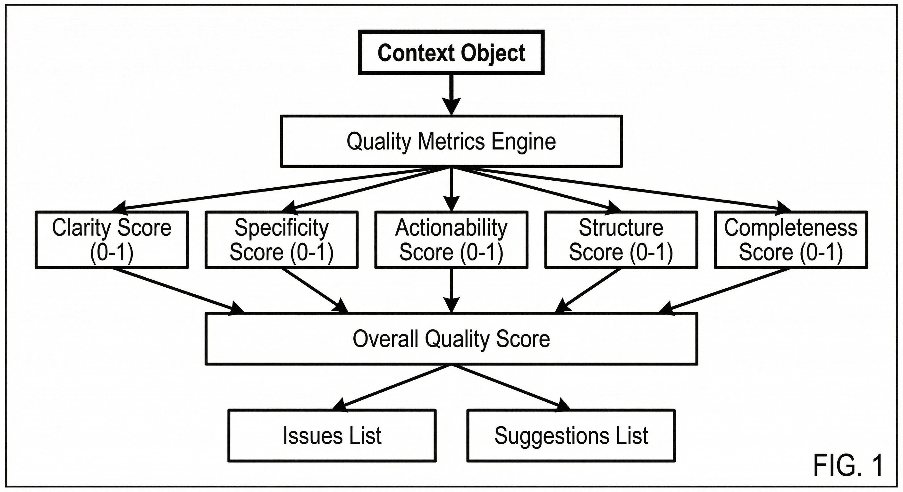
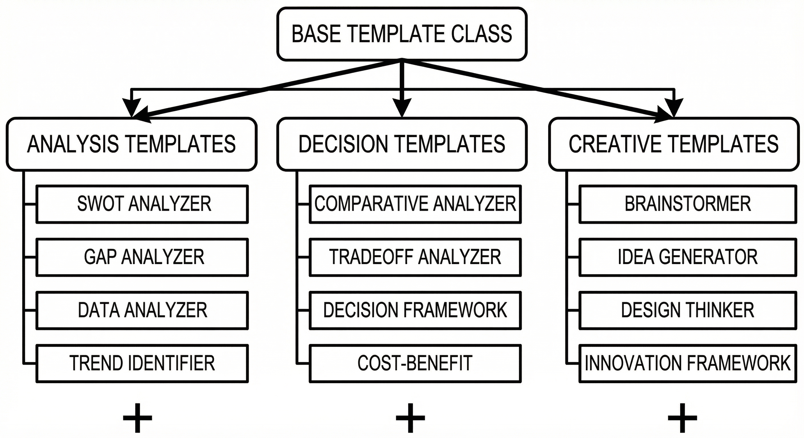
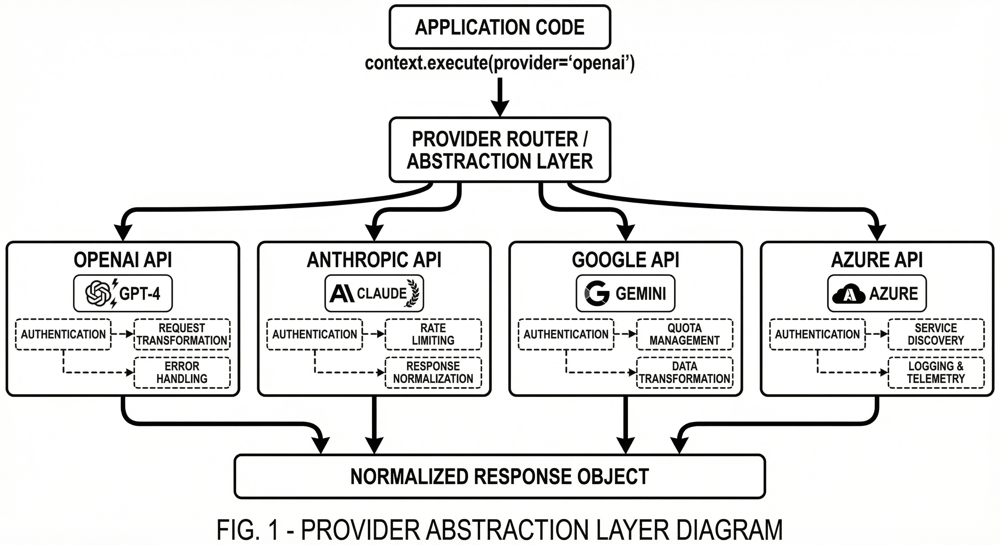
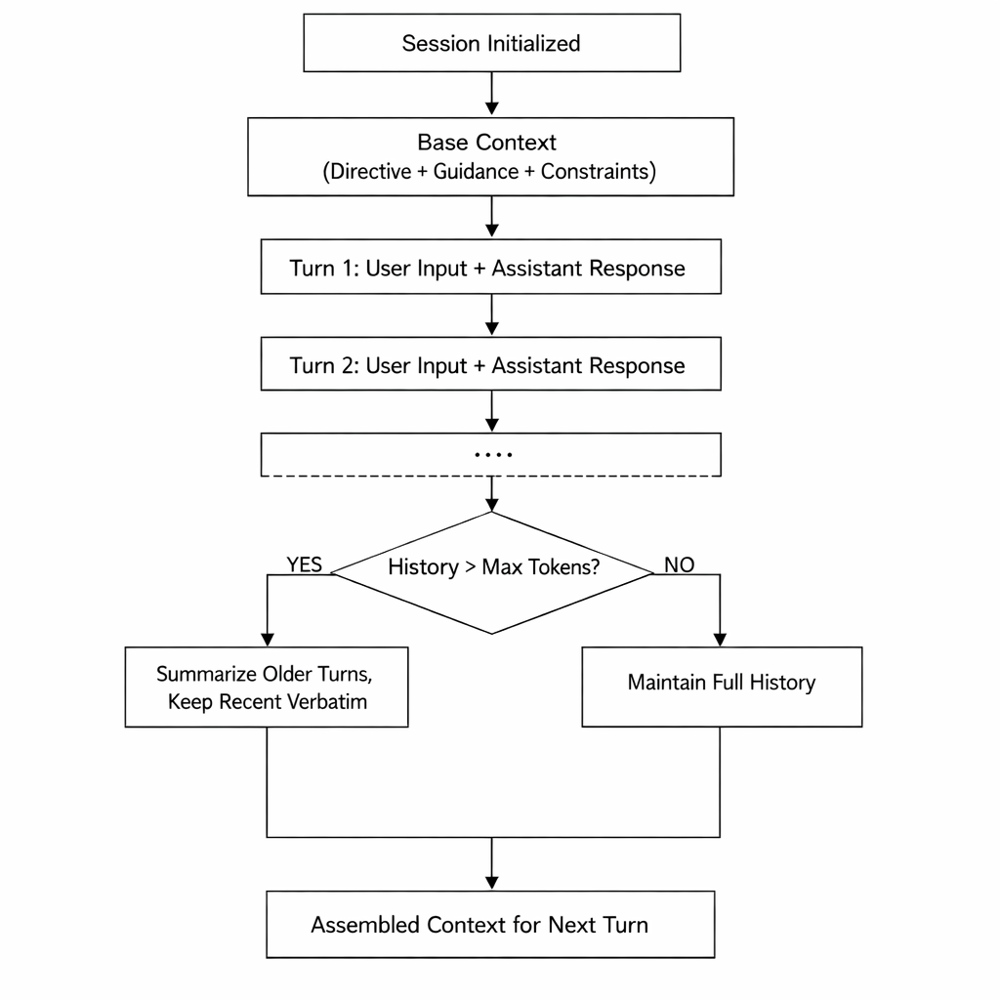

CROSS-REFERENCE TO RELATED APPLICATIONS
This application claims the benefit of priority and is entitled to the filing date pursuant to 35 U.S.C. §119(e).
FIELD OF THE INVENTION
This invention relates generally to artificial intelligence systems, and more specifically to systems and methods for structuring, assembling, validating, and optimizing contextual information (prompts) provided to Large Language Models (LLMs) to improve response quality, consistency, and reliability.
BACKGROUND OF THE INVENTION
Current State of the Art
Large Language Models (LLMs) such as GPT, Claude, Gemini, and similar systems have revolutionized natural language processing. However, their effectiveness heavily depends on the quality and structure of the input prompts (contextual information) they receive.
Problems with Existing Approaches
Current prompt engineering methods suffer from several critical limitations:
- Unstructured Prompts: Most implementations concatenate text strings without validation or structural organization, leading to inconsistent results.
- No Quality Metrics: There is no systematic way to evaluate prompt quality before execution, resulting in trial-and-error approaches.
- Provider Lock-in: Implementations are typically tied to specific LLM providers, requiring complete rewrites when switching providers.
- Lack of Reusability: Effective prompt patterns cannot be easily packaged, shared, or reused across different use cases.
- No Cognitive Structure: Prompts do not leverage established reasoning patterns (comparative analysis, causal reasoning, step-by-step decomposition, etc.) in a systematic way.
- Manual Context Management: Multi-turn conversations require manual tracking and assembly of conversation history.
Need for the Invention
There is a need for a system that provides:
- Structured, modular context assembly with validation
- Automatic quality evaluation of prompts before execution
- Provider-agnostic abstraction layer
- Reusable cognitive templates for common reasoning patterns
- Intelligent context transformation and optimization
SUMMARY OF THE INVENTION
The present invention provides a novel system and method for assembling, validating, optimizing, and executing contextual information for Large Language Models through a modular, quality-aware architecture.
Key Innovations
1. Modular Context Architecture: The invention introduces a multi-component structure comprising:
- Directive: The core task or instruction
- Guidance: Role definition, behavioral rules, expertise areas, and communication style
- Constraints: Boundaries, requirements, format specifications, and quality criteria
- Sources: Reference materials, documents, data, and knowledge bases
2. Quality Metrics Engine: An automated system for evaluating context quality across multiple dimensions:
- Clarity (lack of ambiguity, vague language)
- Specificity (concrete details, quantifiable metrics)
- Actionability (clear instructions, executable steps)
- Structure (logical organization, proper formatting)
- Completeness (coverage of requirements)
3. Cognitive Template System: Pre-engineered templates for structured reasoning:
- Comparative Analysis
- Causal Reasoning
- Step-by-Step Decomposition
- Question Analysis
- Tradeoff Evaluation
- Risk Assessment
- Decision Frameworks
- And 40+ additional specialized templates
4. Provider Abstraction Layer: Unified interface for executing contexts across multiple LLM providers without code changes.
5. Intelligent Context Transformation: Methods for converting contexts between different formats (LangChain, LlamaIndex, native formats) while preserving semantic meaning.
DETAILED DESCRIPTION OF THE INVENTION
System Architecture
The invention comprises several interconnected components:
1. Core Context Class
The Context class serves as the primary container for assembling modular components:
Context Object:
- directive: Directive (required)
- guidance: Guidance (optional)
- constraints: Constraints (optional)
- sources: List[Source] (optional)
- metadata: Dict (system information)
Methods:
- assemble() -> String: Compiles all components into optimized prompt
- execute(provider, **kwargs) -> Response: Sends to LLM and returns result
- validate() -> ValidationResult: Checks structural integrity
- quality_score() -> QualityScore: Evaluates prompt effectiveness
Novel Aspect: Unlike existing systems that use simple string concatenation, this architecture enforces structural validation and provides automatic quality assessment.
2. Component Classes
Directive Class:
Attributes:
- content: String (the primary instruction)
- context: String (optional background)
- requirements: List[String] (specific needs)
Validation Rules:
- Content must be non-empty
- Must contain actionable verbs
- Should specify expected output format
Guidance Class:
Attributes:
- role: String (persona/perspective)
- rules: List[String] (behavioral guidelines)
- expertise: List[String] (knowledge domains)
- style: String (communication approach)
Novel Aspect: Structured role definition with expertise mapping
Constraints Class:
Attributes:
- boundaries: List[String] (what NOT to do)
- format: OutputFormat (structured output specification)
- quality: List[String] (quality criteria)
- requirements: List[String] (must-have elements)
Source Class:
Attributes:
- content: String (reference material)
- metadata: Dict (title, author, date, type)
- relevance: Float (0-1 score)
Methods:
- chunk() -> List[Chunk]: Splits large sources
- embed() -> Vector: Creates semantic embeddings
3. Quality Metrics Engine
Novel Algorithm for Context Quality Evaluation:
QualityMetrics.evaluate(context) -> QualityScore:
Step 1: Clarity Analysis
- Scan for vague words: "thing", "stuff", "maybe", "somehow"
- Check for ambiguous pronouns without clear antecedents
- Measure sentence complexity (Flesch-Kincaid)
- Score: 0-1 (1 = perfectly clear)
Step 2: Specificity Analysis
- Count concrete nouns vs abstract nouns
- Identify quantifiable metrics and numbers
- Check for specific examples vs generalizations
- Score: 0-1 (1 = highly specific)
Step 3: Actionability Analysis
- Identify action verbs (imperative mood)
- Check for clear success criteria
- Verify presence of deliverables/outputs
- Score: 0-1 (1 = completely actionable)
Step 4: Structure Analysis
- Evaluate logical flow and organization
- Check formatting (bullets, numbering, sections)
- Assess information hierarchy
- Score: 0-1 (1 = well-structured)
Step 5: Completeness Analysis
- Match requirements against content
- Identify missing critical information
- Check for necessary context
- Score: 0-1 (1 = fully complete)
Step 6: Overall Score Calculation overall_score = weighted_average([ clarity * 0.25, specificity * 0.20, actionability * 0.25, structure * 0.15, completeness * 0.15 ])
Output: QualityScore object with:
- overall: Float (0-1)
- dimensions: Dict[Dimension, Float]
- issues: List[Issue] (identified problems)
- suggestions: List[String] (improvement recommendations)
- strengths: List[String] (what's working well)
Novel Aspect: This is the first automated system for evaluating prompt quality before execution, allowing developers to optimize contexts programmatically.
4. Template System
Base Template Class:
Template:
- name: String
- category: String (analysis, decision, reasoning, etc.)
- parameters: Dict[String, Type] (required inputs)
Methods:
- build_context(**params) -> Context: Constructs optimized context
- execute(provider, **params) -> Response: Build and run
- validate_params(**params) -> ValidationResult: Check inputs
Example: Comparative Analyzer Template:
ComparativeAnalyzer.build_context(
options: List[String], # Items to compare criteria: String, # Comparison dimensions context: String = None, # Background information depth: String = "detailed" # Analysis depth ) -> Context:
Generated Directive: "Conduct a comprehensive comparative analysis of the following options: [options formatted as numbered list]
Evaluate each option across these criteria: [criteria formatted as bullet points]
For each criterion: 1. Rate each option (0-10 scale) 2. Provide specific evidence 3. Note key tradeoffs
Conclude with:
- Overall winner and why
- Use case recommendations
- Decision matrix summary"
Generated Guidance: Role: "Expert Analyst with deep experience in comparative evaluation" Rules:
- Be objective and evidence-based
- Acknowledge limitations in available data
- Consider both quantitative and qualitative factors
Expertise: ["comparative analysis", "decision science", "evaluation frameworks"]
Generated Constraints:
- Use consistent rating scales
- Provide specific examples for each rating
- Format output as structured comparison table
- No unsupported claims
Novel Aspect: Templates encapsulate proven cognitive patterns as reusable, parameterized components. The system includes 50+ specialized templates covering:
- Analysis patterns (SWOT, Gap, Trend, Anomaly, Data analysis)
- Decision patterns (Comparative, Tradeoff, Cost-benefit, Multi-objective)
- Reasoning patterns (Causal, Step-by-step, Analogical, Root cause)
- Creative patterns (Brainstorming, Idea generation, Design thinking)
- Communication patterns (Simplification, Persuasion, Audience adaptation)
- Planning patterns (Scenario, Resource allocation, Stakeholder mapping)
- Problem-solving patterns (Decomposition, Bottleneck identification, Constraint optimization)
5. Provider Abstraction Layer
Novel Architecture for Multi-Provider Support:
Context.execute(provider: String, **kwargs) -> Response:
Step 1: Assemble Context prompt = self.assemble()
Step 2: Provider Routing if provider == "openai": client = OpenAI(api_key=kwargs.get('api_key')) response = client.chat.completions.create( model=kwargs.get('model', 'gpt-4'), messages=[{"role": "user", "content": prompt}], temperature=kwargs.get('temperature', 0.7), max_tokens=kwargs.get('max_tokens') )
elif provider == "anthropic": client = Anthropic(api_key=kwargs.get('api_key')) response = client.messages.create( model=kwargs.get('model', 'claude-3-opus'), messages=[{"role": "user", "content": prompt}], temperature=kwargs.get('temperature', 0.7), max_tokens=kwargs.get('max_tokens') )
elif provider == "google": # Google Gemini implementation
elif provider == "azure": # Azure OpenAI implementation
elif provider == "local": # Local model implementation (Ollama, LMStudio, etc.)
Step 3: Response Normalization return Response( content=extract_text(response), tokens_used=extract_tokens(response), model=model_used, provider=provider, raw_response=response, metadata=extract_metadata(response) )
Novel Aspect: Single API that works across all major LLM providers without code changes. Developers can switch providers by changing a single parameter.
6. Session Management
Method for Multi-Turn Context Persistence:
Session:
- id: String (unique identifier)
- messages: List[Message] (conversation history)
- context: Context (base context for all turns)
- metadata: Dict (tracking information)
Methods:
- add_turn(user_input, assistant_response): Appends to history
- get_context(max_tokens=None) -> Context: Returns assembled context with history
- summarize() -> String: Compresses long histories
- export() -> Dict: Saves session state
- load(data: Dict) -> Session: Restores session
Algorithm for Context Assembly with History: 1. Start with base context (directive, guidance, constraints) 2. Add conversation history (newest first, up to max_tokens limit) 3. If history exceeds limit: a. Summarize older turns b. Keep recent turns verbatim 4. Return assembled context
Novel Aspect: Automatic context window management with intelligent summarization for long conversations.
7. Transformation Engine
Method for Format Conversion:
Context.to_langchain() -> LangChainPrompt:
Converts Context object to LangChain PromptTemplate format
Context.to_llamaindex() -> LlamaIndexPrompt: Converts Context object to LlamaIndex prompt format
Context.to_dict() -> Dict: Serializes to JSON-compatible dictionary
Context.from_dict(data: Dict) -> Context: Deserializes from dictionary
Novel Aspect: Semantic-preserving transformations between frameworks
CLAIMS
Independent Claims
Claim 1: A computer-implemented method for assembling and optimizing contextual information for large language models, comprising:
- receiving a plurality of modular components comprising at least a directive component specifying a task;
- validating structural integrity of said components according to predefined rules;
- evaluating quality of assembled context across multiple dimensions including clarity, specificity, and actionability;
- assembling said components into an optimized prompt structure;
- executing said prompt against a selected language model provider; and
- returning a normalized response object.
Claim 2: A system for quality-aware context assembly for artificial intelligence systems, comprising:
- a modular component architecture for structuring contextual information;
- a quality metrics engine for evaluating prompt effectiveness before execution;
- a provider abstraction layer for unified execution across multiple language model providers;
- a template system for encapsulating cognitive reasoning patterns; and
- a transformation engine for converting contexts between different frameworks.
Dependent Claims
Claim 3: The method of Claim 1, wherein said quality evaluation comprises:
- analyzing clarity by detecting vague language and ambiguous references;
- measuring specificity by quantifying concrete versus abstract content;
- assessing actionability by identifying imperative verbs and success criteria;
- evaluating structure by analyzing logical organization and formatting; and
- computing an overall quality score as a weighted combination of said dimensions.
Claim 4: The method of Claim 1, wherein said modular components further comprise:
- a guidance component specifying role, behavioral rules, expertise areas, and communication style;
- a constraints component defining boundaries, format requirements, and quality criteria; and
- a sources component containing reference materials with relevance scoring.
Claim 5: The system of Claim 2, wherein said template system comprises:
- a base template class with parameterized context generation;
- a plurality of specialized templates for different cognitive patterns;
- automatic parameter validation; and
- built-in quality optimization for each template type.
Claim 6: The method of Claim 1, wherein said provider abstraction layer enables switching between language model providers by changing a single parameter without modifying context structure.
Claim 7: The system of Claim 2, further comprising a session management component for multi-turn conversations with automatic context window management and intelligent history summarization.
Claim 8: The method of Claim 3, wherein said quality metrics engine generates improvement suggestions based on identified issues in the context.
Claim 9: The system of Claim 2, wherein said transformation engine preserves semantic meaning while converting contexts between LangChain, LlamaIndex, and native formats.
Claim 10: The method of Claim 1, wherein said template system includes at least 50 specialized templates covering analysis, decision-making, reasoning, creative thinking, communication, planning, and problem-solving patterns.
ABSTRACT
A system and method for assembling, validating, and optimizing contextual information (prompts) for Large Language Models through a modular architecture comprising directive, guidance, constraints, and sources components. The invention includes a quality metrics engine that automatically evaluates prompt effectiveness across multiple dimensions, a provider abstraction layer enabling unified execution across different LLM providers, and a template system encapsulating 50+ cognitive reasoning patterns. The system enables developers to programmatically construct high-quality prompts, evaluate them before execution, and switch between providers without code changes, significantly improving consistency, reliability, and reusability of AI-powered applications.
DRAWINGS
Figure 1: System architecture for context assembly.

Figure 2: Quality metrics evaluation flow.

Figure 3: Template system hierarchy.

Figure 4: Provider abstraction layer.

Figure 5: Session management flow.

INVENTOR DECLARATION
I hereby declare that I am the original inventor of the subject matter which is claimed and for which a patent is sought.
I hereby declare that all statements made herein of my own knowledge are true and that all statements made on information and belief are believed to be true.
Signature: /Dhiraj Kumar Pokhrel/ Date: February 11, 2026
Printed Name: Dhiraj Kumar Pokhrel